<title>Kalua 1.0 — le log</title>
<meta name="claude:viewport-fit-sides" content="cover">
<link rel="preconnect" href="https://fonts.googleapis.com">
<link href="https://fonts.googleapis.com/css2?family=Fredoka:wght@500;600&family=Nunito:wght@400;600;700&display=swap" rel="stylesheet">
<style>
/* VOICE occasion, tendre et joyeux : un carnet de bord de jeu
   IDEA le carnet de l'île : chaque partie du travail est une page avec ses captures
   PICTURE la bande d'ouverture : les trois boss des îles, en grand
   COLOUR lagon turquoise profond, sable, corail en accent
   TYPE Fredoka + Nunito
   LAYOUT bande d'ouverture pleine largeur ; puis sections en deux colonnes texte / images, empilées sur téléphone */
:root{color-scheme:light dark;--bg:light-dark(#fbf6ec,#10232a);--ink:light-dark(#2b2230,#f3ece0);--soft:light-dark(#6b5a5a,#c8bfb2);--sea:light-dark(#0f6f7a,#7fd6dc);--sand:light-dark(#f1e4c8,#1a333b);--coral:light-dark(#e0566b,#ff8fa0);--card:light-dark(#ffffff,#16303a);--line:light-dark(#e6d8bd,#29464f)}
:root[data-theme=light]{color-scheme:light}:root[data-theme=dark]{color-scheme:dark}
*{box-sizing:border-box;min-width:0}
body{background:var(--bg);color:var(--ink);font:16px/1.6 Nunito,system-ui,sans-serif;overflow-x:clip;margin:0}
h1,h2,h3{font-family:Fredoka,system-ui,sans-serif;font-weight:600;letter-spacing:-.01em;line-height:1.1;margin:0}
.band{padding-block:clamp(28px,4vw,56px);padding-left:max(5vw,16px,env(safe-area-inset-left,0px));padding-right:max(5vw,16px,env(safe-area-inset-right,0px))}
.wrap{max-width:1180px;margin:0 auto}
.hero{background:#0f6f7a;color:#fff8ea;margin-top:calc(-1*env(safe-area-inset-top,0px));padding-top:calc(env(safe-area-inset-top,0px) + 2.5rem)}
.hero h1{font-size:clamp(34px,5vw,52px)}
.hero p{max-width:62ch;font-size:17px;margin:.6rem 0 0;color:#e6fbf8}
.trio{display:grid;grid-template-columns:repeat(3,minmax(0,1fr));gap:14px;margin-top:26px}
.trio figure{margin:0;background:#0a4d55;border-radius:16px;overflow:hidden}
.trio img{display:block;width:100%;aspect-ratio:16/8;object-fit:cover}
.trio figcaption{padding:10px 14px 14px;font-size:14px;color:#dff7f3}
.trio b{display:block;font-family:Fredoka,sans-serif;font-size:18px;color:#fff}
.pub{display:flex;flex-wrap:wrap;gap:10px;margin-top:22px}
.pill{background:#fff8ea;color:#0f4d55;border-radius:999px;padding:6px 14px;font-weight:700;font-size:14px}
section{border-top:1px solid var(--line)}
.sec{display:grid;grid-template-columns:minmax(0,5fr) minmax(0,7fr);gap:clamp(20px,3vw,40px);align-items:start}
.sec h2{font-size:clamp(26px,3vw,34px);color:var(--sea);margin-bottom:12px}
.sec ul{padding-left:1.1em;margin:.4rem 0}
.sec li{margin:.3rem 0}
.gal{display:grid;grid-template-columns:repeat(2,minmax(0,1fr));gap:12px}
.gal figure{margin:0;background:var(--card);border:1px solid var(--line);border-radius:14px;overflow:hidden}
.gal img{display:block;width:100%;height:auto}
.gal figcaption{padding:8px 12px;font-size:14px;color:var(--soft)}
.gal .wide{grid-column:1/-1}
.code{display:inline-block;background:var(--sand);border-radius:8px;padding:1px 8px;font-weight:700;color:var(--coral);white-space:nowrap}
.todo{background:var(--sand)}
.todo ol{margin:.5rem 0 0;padding-left:1.3em}
.todo li{margin:.45rem 0}
.note{color:var(--soft);font-size:14px}
@media(max-width:820px){.sec{grid-template-columns:minmax(0,1fr)}.trio{grid-template-columns:minmax(0,1fr)}}
@media(max-width:520px){.gal{grid-template-columns:minmax(0,1fr)}}
</style>

<header class="band hero"><div class="wrap">
  <h1>Kalua 1.0 : le log</h1>
  <p>Tout ce que j'ai fait depuis ta demande, avec les maquettes tirées du vrai jeu. Regarde, et dis-moi ce qu'il faut changer.</p>
  <div class="trio">
    <figure>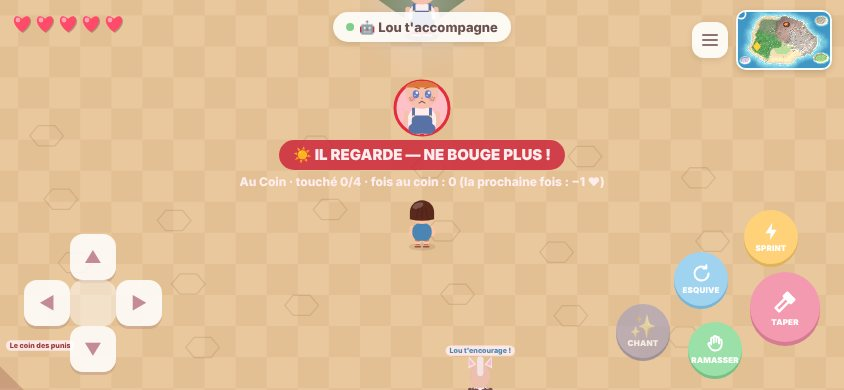<figcaption><b>Au Coin</b>Grotte des Tortues · un, deux, trois… soleil !</figcaption></figure>
    <figure>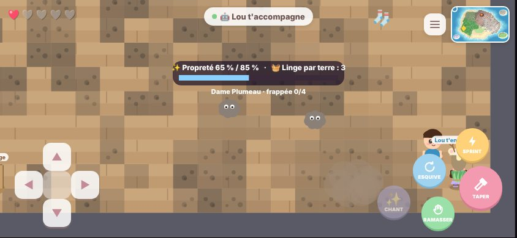<figcaption><b>Dame Plumeau</b>Grotte du Phare · la Fée du Ménage</figcaption></figure>
    <figure>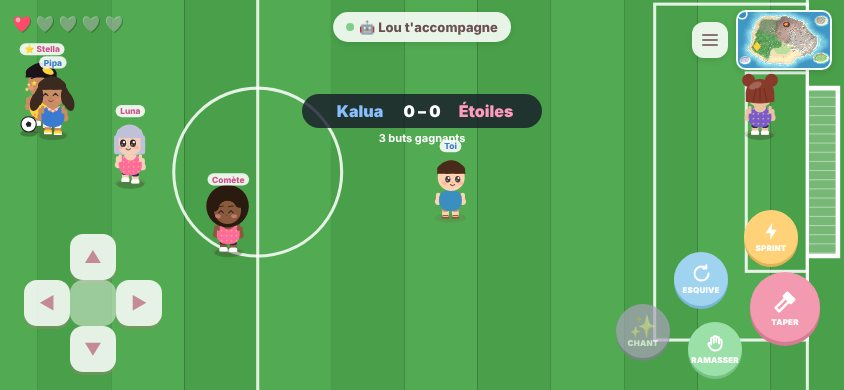<figcaption><b>Capitaine Stella</b>Grotte des Étoiles · match en 3 buts</figcaption></figure>
  </div>
  <div class="pub"><span class="pill">0.7 publiée sur main</span><span class="pill">1.0 publiée sur main</span><span class="pill">0 erreur aux tests</span></div>
</div></header>

<section class="band"><div class="wrap sec">
  <div>
    <h2>1. La 0.6 terminée (publiée en 0.7)</h2>
    <ul>
      <li><b>Commerçants aux comptoirs</b>, de 8 h à 19 h : Rosalie au Fil d'Or, Jojo à la Marmite, et 9 nouveaux habitants (Barnabé le maire, Léon le facteur, Mamie Brioche, Monsieur Plume, Gino, Fanny, Margot, Lucas, Ahmed). Leur parler ouvre la boutique.</li>
      <li><b>Nouvelles quêtes au village</b> : le sac du facteur (5 lettres puis un colis pour Brann), la galette de Mamie Brioche, les 4 livres en retard, Pistache le chat de Gino (à retrouver 3 fois), le panier de Fanny.</li>
      <li><b>Projets du maire</b> : 8 vraies quêtes avec récompenses, de la maison jusqu'au château.</li>
      <li><b>Fête sur la place</b> : fanions, lampions, ballons, scène, gâteau géant, feu d'artifice le soir, musique de fête, et les habitants qui dansent.</li>
      <li><b>Marché de Noël</b> automatique en décembre : chalets, grand sapin, neige, musique de Noël, et le Père Kalua qui donne un cadeau par jour.</li>
      <li><b>Animations</b> : fumée des cheminées, drapeaux, ailes des moulins, jets d'eau.</li>
      <li><b>Créateur de personnage</b> : sweat, blouson, manteau, maillot, les 16 motifs, 24 imprimés, une 3e couleur, de nouvelles chaussures et de nouveaux chapeaux.</li>
      <li><b>Cinéma en plein air</b> : chaque cinématique est enregistrée quand on la voit, puis on peut la revoir pour de vrai.</li>
      <li><b>Château Renaissance</b> au niveau 5, façon Loire : pierre blanche, hauts toits d'ardoise, lucarnes, tours en poivrière, lanterne dorée, perron et jardins à la française.</li>
    </ul>
  </div>
  <div class="gal">
    <figure class="wide">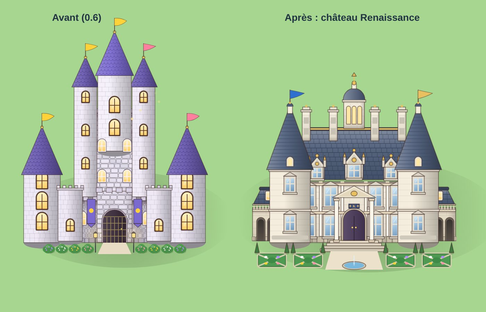<figcaption>Le château : avant (0.6) et après (Renaissance)</figcaption></figure>
    <figure>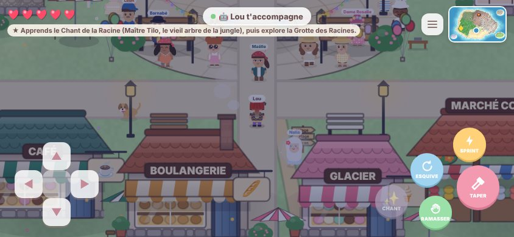<figcaption>La fête sur la place, le soir</figcaption></figure>
    <figure>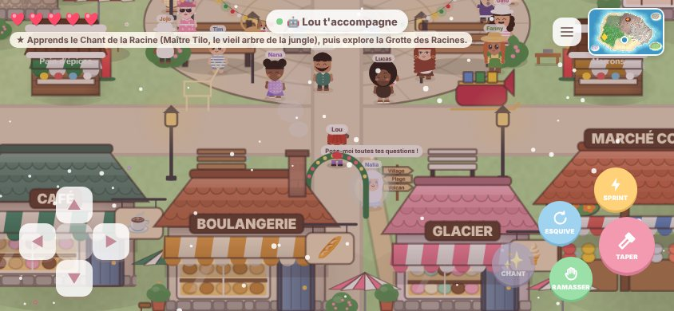<figcaption>Le marché de Noël, avec la neige</figcaption></figure>
    <figure>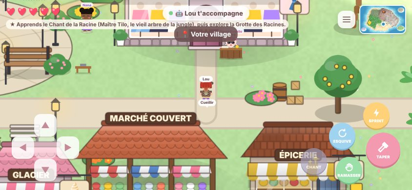<figcaption>Rosalie derrière le comptoir du Fil d'Or</figcaption></figure>
    <figure>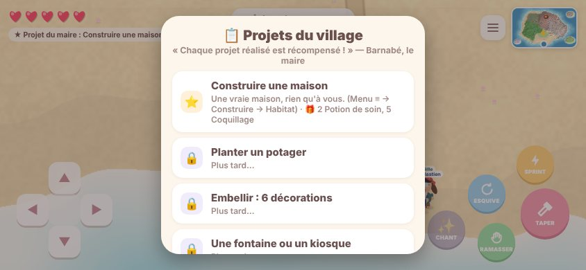<figcaption>Les projets du maire</figcaption></figure>
    <figure>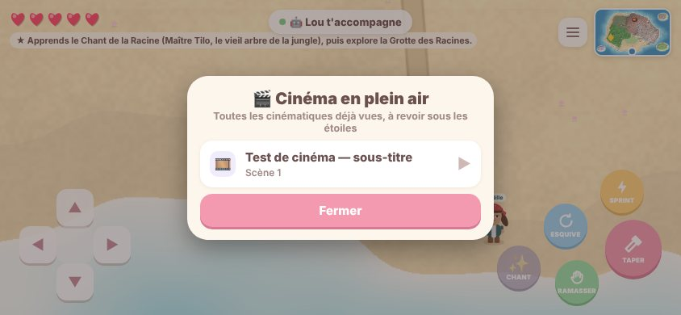<figcaption>Le cinéma en plein air</figcaption></figure>
    <figure>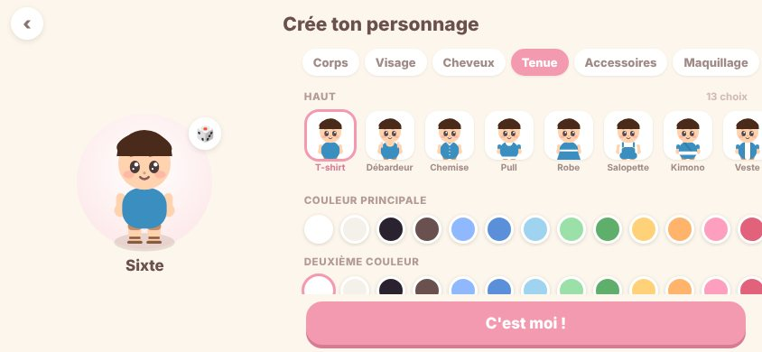<figcaption>Les nouveaux hauts dans le créateur</figcaption></figure>
  </div>
</div></section>

<section class="band"><div class="wrap sec">
  <div>
    <h2>2. Les grottes à énigmes et les codes</h2>
    <p>Chaque grotte des îles a son fil rouge. Les énigmes résolues s'écrivent dans le <b>carnet</b> de la grotte, et le carnet donne le code de la porte du boss. On tape le code au clavier devant la porte.</p>
    <ul>
      <li><b>Grotte des Tortues</b> : le carnet de la Tortue-Mère, « le jour où deux cœurs se sont rencontrés ». Compter les œufs donne le jour (10), une devinette donne le mois (septembre), l'alphabet donne l'année (26). Code <span class="code">10/09/26</span>. En plus : un vrai ou faux sur les tortues, la vie d'une tortue à remettre dans l'ordre, et une salle de 3 devinettes.</li>
      <li><b>Grotte du Phare</b> : le carnet du gardien cache 9 lettres dans 9 devinettes de ménage (Balai, Éponge, Raclette, Aspirateur, Nettoyer, Gants, Évier, Rangé, Eau). Code <span class="code">BÉRANGÈRE</span>, le nom gravé sous la Cloche.</li>
      <li><b>Grotte des Étoiles</b> : 6 questions de foot et d'étoiles, plus la recette du cocktail à remettre dans l'ordre. Fragments NE · AT · CO · CK · TA · IL. Code <span class="code">NEAT COCKTAIL</span>.</li>
      <li>Types d'énigmes : réponse à écrire, choix multiple, vrai ou faux en série, remettre dans l'ordre, trouver l'intrus, calcul, devinettes. Une mauvaise réponse se retente.</li>
    </ul>
  </div>
  <div class="gal">
    <figure class="wide">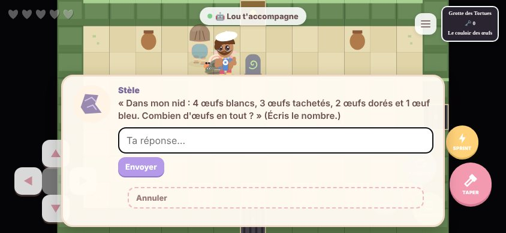<figcaption>Une énigme à réponse écrite (Grotte des Tortues)</figcaption></figure>
    <figure class="wide">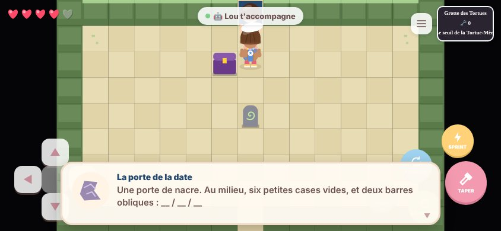<figcaption>La porte de la date : le carnet s'affiche, puis on écrit le code</figcaption></figure>
  </div>
</div></section>

<section class="band"><div class="wrap sec">
  <div>
    <h2>3. Les trois boss des îles</h2>
    <p>Chacun a sa propre arène, plus grande qu'une salle.</p>
    <ul>
      <li><b>Au Coin</b>, un petit garçon au bonnet d'âne. Il compte face au mur : on avance. Chaque fois qu'il se remet face au mur, un décompte 3, 2, 1 se lance avant de pouvoir rebouger. Puis, à un moment au hasard, il crie « Soleil » et se retourne : si tu bouges, <b>« AU COIN ! »</b> Tu passes par le coin des punis, tu recommences du début et tu perds 1 cœur, puis 2, puis 3… Il faut le toucher 4 fois avec TAPER.<br>Plus tu le touches, plus c'est dur : il compte plus vite et plus irrégulièrement, il regarde plus longtemps, des balles roulent (si une balle te bouscule pendant qu'il regarde, tu as bougé), et il peut jeter un œil en douce. Pour tenter de bouger : un bonbon ou une sucette apparaît juste à côté pendant qu'il regarde. Si tu attends sagement, le bonbon reste un peu et te rend 1 cœur.<br>Un médaillon en haut de l'écran montre toujours s'il regarde le mur ou toi.</li>
      <li><b>Dame Plumeau, la Fée du Ménage</b> : elle adore le désordre. Elle lance des nuages de poussière (zone annoncée au sol), des chaussettes et des flaques de savon qui font glisser, et la poussière fait naître des moutons qui mordent. TAPER balaie, RAMASSER prend le linge qu'il faut porter au panier. À 85 % de propreté, linge rangé, elle s'évanouit de dégoût : on la frappe. Elle se réveille et resalit tout, plus vite. 4 coups.</li>
      <li><b>Capitaine Stella et les Étoiles Filantes</b> : un match en 3 buts gagnants. Ton équipe : toi, ton compagnon (ou ton ou ta partenaire en duo), Pipa, et Brann aux buts. En face : Stella, Luna, Comète et Véga aux buts. TAPER tire, RAMASSER passe, ESQUIVE tacle. Stella a un « Tir des Étoiles » qui tourne. Si on perd, on rejoue quand on veut.</li>
      <li>Chaque boss donne un trophée : la Bille d'Au Coin, le Plumeau d'or, le Ballon des Étoiles. Ton nom est au générique : « Les trois boss des îles imaginés par Sixte Maron ».</li>
    </ul>
  </div>
  <div class="gal">
    <figure>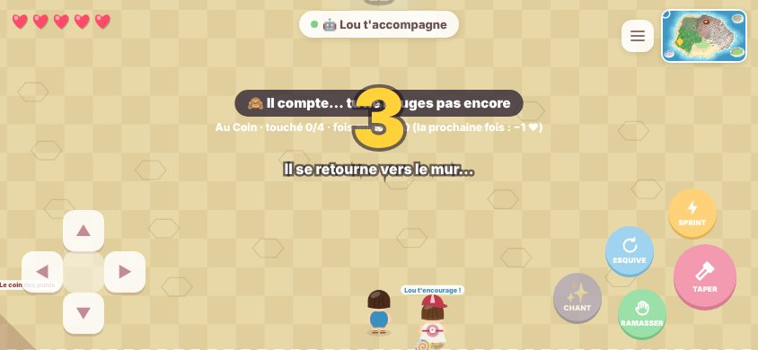<figcaption>Il se remet face au mur : 3, 2, 1…</figcaption></figure>
    <figure><figcaption>Il regarde : un bonbon pour te tenter</figcaption></figure>
    <figure><figcaption>Dame Plumeau : propreté et linge à ranger</figcaption></figure>
    <figure><figcaption>Le match contre les Étoiles Filantes</figcaption></figure>
  </div>
</div></section>

<section class="band"><div class="wrap sec">
  <div>
    <h2>4. Adopter les animaux et monter à cheval</h2>
    <ul>
      <li>Caresse <b>3 fois</b> un chien, un chat, un cheval ou un animal de la ferme : il s'attache à toi. On te propose de l'adopter, et tu lui donnes un nom (avec des idées de noms).</li>
      <li>Les animaux adoptés sont <b>communs à vous deux</b>. Ils vivent à l'enclos, au poulailler, à l'étable ou à la maison si vous les avez construits, sinon au village. Le chien et le chat te suivent dès le début.</li>
      <li>Ramasser près d'eux : caresser (+1 cœur par jour), « Suis-moi » ou « Rentre à la maison », changer son nom, et récolter une fois par jour (lait, œufs, laine, plumes, champignons…). Le chien déterre parfois une perle.</li>
      <li><b>Le cheval</b> : « Monter », et on va presque deux fois plus vite. Ramasser pour descendre. Menu ≡ → <b>Siffler mon cheval</b> pour l'appeler. On le voit aussi monté sur le téléphone de l'autre.</li>
      <li>Menu ≡ → <b>Nos animaux</b> : la liste de la famille.</li>
    </ul>
  </div>
  <div class="gal">
    <figure>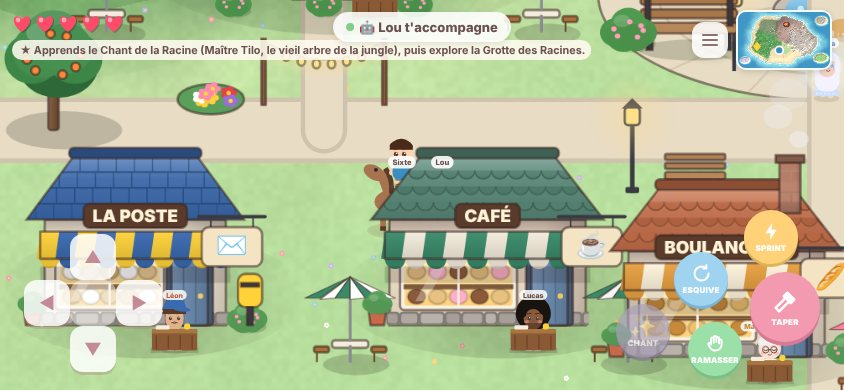<figcaption>À cheval dans le village</figcaption></figure>
    <figure>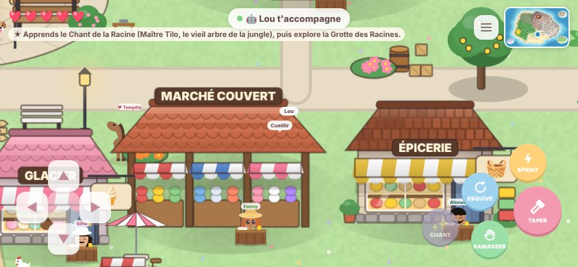<figcaption>Tempête, le cheval adopté, arrive au galop</figcaption></figure>
  </div>
</div></section>

<section class="band"><div class="wrap sec">
  <div>
    <h2>5. Les finitions de la 1.0</h2>
    <ul>
      <li><b>Créatures secrètes</b> placées sur les îles : la Tortue Ancienne sur la plage de l'Île aux Tortues à l'aube, le Hibou-Lanterne la nuit sur l'Île du Phare, le Renard Céleste la nuit sur l'Îlot aux Étoiles, seulement après les deux autres.</li>
      <li><b>Icônes dessinées</b> : les 66 objets qui n'avaient qu'un emoji ont maintenant un vrai dessin. Les 107 objets sont dessinés.</li>
      <li><b>Sauvegarde en ligne du solo</b> : les îles en solo, la partie et le village sont aussi gardés en ligne. On peut changer de téléphone.</li>
      <li><b>Escorte de Nalia</b> plus rapide. <b>Mère-Racine</b> plus petite : elle ne dépasse plus en haut des petits écrans.</li>
      <li><b>Nalia</b> connaît toutes les nouveautés : commerçants, projets, fête, Noël, cinéma, château, adoption, cheval, les 3 grottes et les 3 boss, les créatures secrètes.</li>
      <li><b>Nouvelles captures</b> pour la fiche du jeu dans Von, et une nouvelle description.</li>
      <li>Équilibrage : les nouveaux boss sont réglés selon le niveau (Facile, Normal, Challenge). Le reste n'a pas bougé.</li>
    </ul>
  </div>
  <div class="gal">
    <figure class="wide">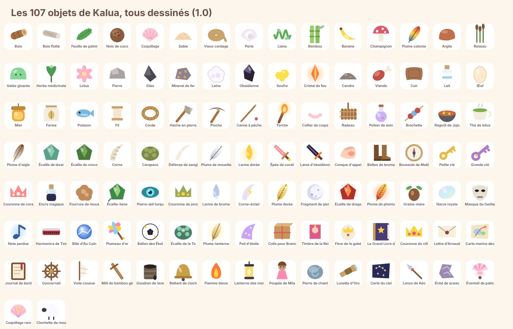<figcaption>Les 107 objets, tous dessinés</figcaption></figure>
    <figure>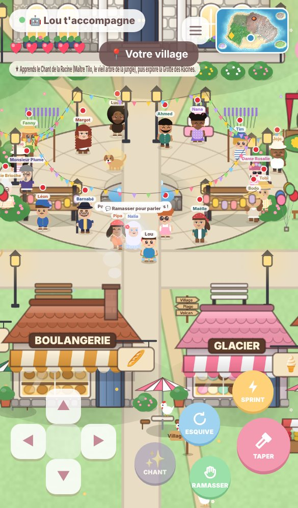<figcaption>Fiche Von : la fête</figcaption></figure>
    <figure>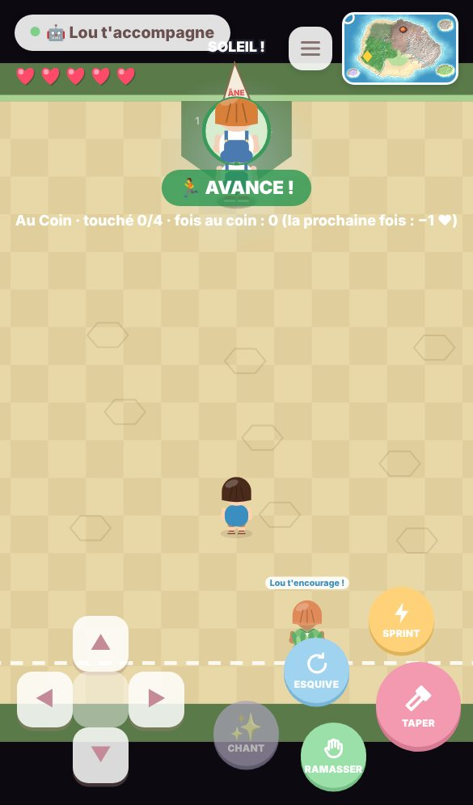<figcaption>Fiche Von : Au Coin</figcaption></figure>
  </div>
</div></section>

<section class="band todo"><div class="wrap">
  <h2 style="color:var(--sea);font-size:clamp(26px,3vw,34px)">À faire de ton côté</h2>
  <ol>
    <li><b>Règles Firebase</b> : colle le nouveau <b>database.rules.json</b> dans la console (Realtime Database → Règles). Il ajoute la partie <code>soloSaves</code> pour la sauvegarde en ligne du solo. Sans elle, le solo reste sauvegardé dans le téléphone seulement.</li>
    <li><b>Jouer à deux sur iPhone</b> : le village commun, les animaux adoptés, le cheval monté, et les trois boss.</li>
    <li><b>Vérifier les trois boss à la main</b> : je les ai gagnés en test, mais pas joués avec les doigts. Dis-moi si Au Coin est trop dur ou trop facile, et si le match se joue bien au tactile.</li>
    <li><b>La date de sortie</b> pour la bande-annonce : il y a toujours la fausse date floutée.</li>
  </ol>
  <p class="note">Pas fait, volontairement : la vraie coopération dans les grottes (chacun garde ses énigmes et ses ennemis). C'est un gros chantier, à décider ensemble. En duo, chacun joue sa propre partie des arènes, et on voit l'autre s'il est dans la même.</p>
</div></section>
